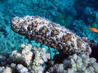

Actual cucumber
Sea-cucumber almost near seashore
This night photo was taken not underwater. The holothuria was noticed in shallow water about 50cm deep. I watched such entity in deep but those photos were less colorful.

Actual cucumber
This night photo was taken not underwater. The holothuria was noticed in shallow water about 50cm deep. I watched such entity in deep but those photos were less colorful.